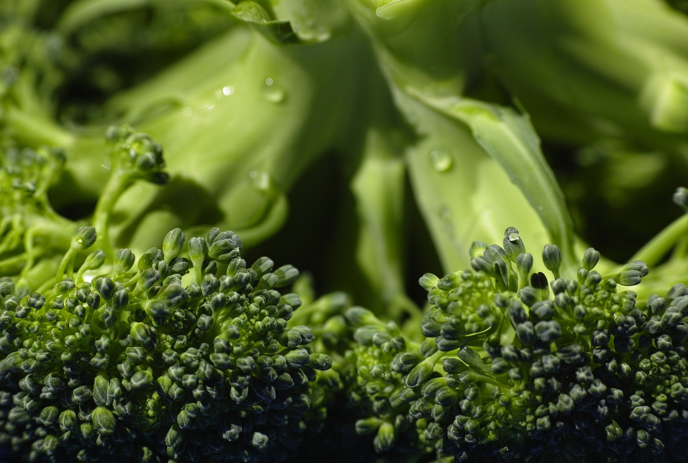
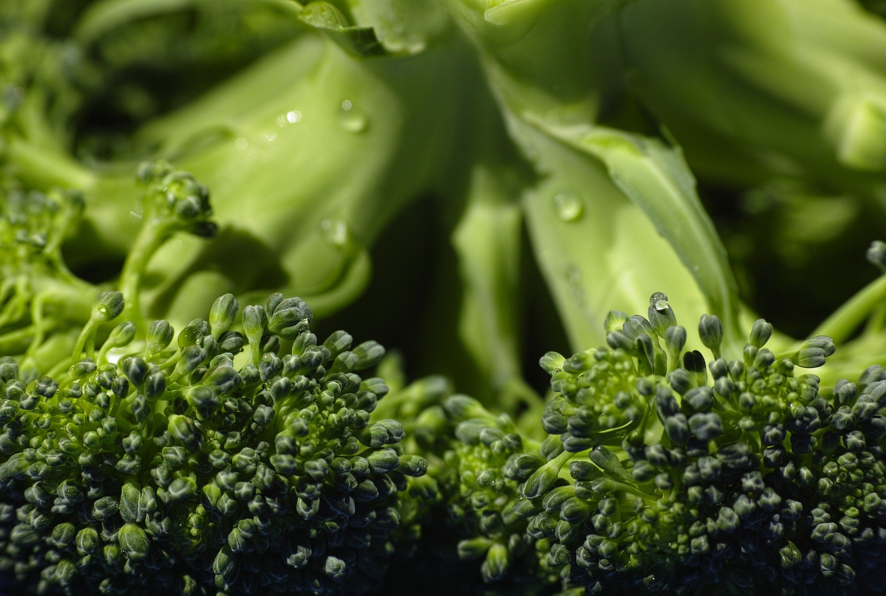
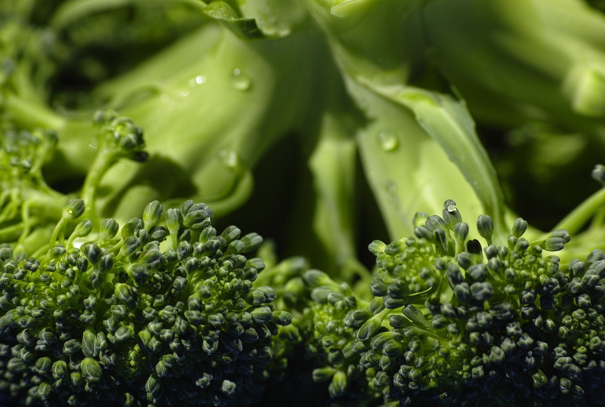

A pandemia do novo coronavírus afetou a qualidade e a quantidade de comida que as crianças e adolescentes brasileiros estão consumindo. Além disso, em diversos outros aspectos, os lares onde eles vivem foram mais afetados pela crise econômica e social que se instalou após a chegada do vírus no Brasil. É o que concluiu pesquisa do Ibope e Unicef realizada com adultos que vivem com adolescentes e crianças entre 4 e 17 anos. De acordo com o levantamento, 21% dos entrevistados afirmaram que vivenciaram momentos em que os alimentos acabaram e não havia dinheiro para comprar mais. Entre os que vivem com crianças e adolescentes em casa, esse percentual foi de 27%. Sem ter a quem recorrer, como programas de distribuição de alimentos, 6% disseram que a única saída foi deixar de comer, o que representa cerca de nove milhões de brasileiros deixando de realizar alguma refeição por falta de dinheiro. Nos lares com crianças e adolescentes, esse percentual sobe para 8%.
O estudo ainda mostra que a comida, quando tem, é de pior qualidade em muitos casos. Quase metade (49%) dos brasileiros sofreu alguma mudança nos hábitos alimentares neste período de quarentena. Entre as famílias que vivem com crianças ou adolescentes o impacto foi ainda maior: 58%. Isso inclui o aumento do consumo de alimentos industrializados, refrigerantes e fast food, o que contribuiu para a evolução de uma outra epidemia, explica Cristina Albuquerque, chefe de saúde do Unicef Brasil. “A covid-19 pode trazer um agravamento da epidemia da obesidade entre crianças, adolescentes e nas famílias”, afirmo
A mesa vazia é reflexo direto da crise econômica que abalou principalmente as famílias mais pobres durante a pandemia. Mais da metade dos entrevistados (55%) disse que o rendimento caiu desde o início da pandemia. Em muitos casos, a redução se deu por causa das demissões, já que 64% afirmaram que estavam trabalhando antes da chegada do coronavírus ao Brasil, mas, no momento da pesquisa, realizada em julho, este percentual havia caído para 50%. Já os lares com crianças e adolescentes foram especialmente afetados também neste campo: nessas casas, 63% afirmaram que o rendimento caiu. Em 25% desses lares, a renda diminui pela metade. Já nas casas sem crianças, a mesma redução foi observada por 14%.
Leia mais aqui
